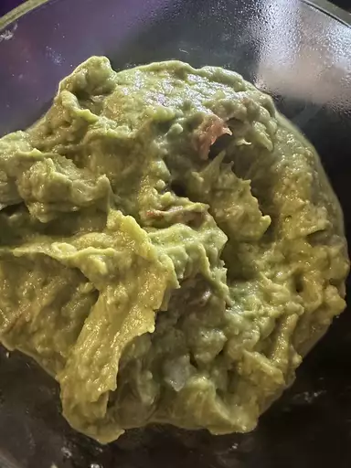
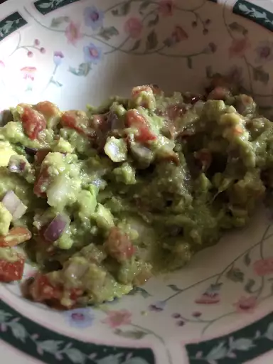

Step by step Guacamole Recipe
Restaurant-worthy Guacamole is just a few ingredients away. You'll be surprised how easy it is to make this top-rated guacamole recipe. You'll come back to it again and again!
Guacamole Ingredients
- Avocados: Of course, you'll need avocados!
- lime: lime juice adds brightness and slows down the browning process.
- Salt: A teaspoon of salt enhances the flavors of the other ingredients.
- Vegetables: You'll also need an onion and roma tomatoes.
- Herbs and spices: Fresh cilantro, minced garlic, and cayenne pepper add tons of flavor.
Step 1
Mash avocados, lime juice, and salt together
in a medium bowl

Step 2
mix in tomatoes, onion, cilantro,
and garlic.

Step 3
Stir in cayenne pepper.

Step 4
Serve immediately, or cover and refrigerate for 1 hour for enhanced flavor.